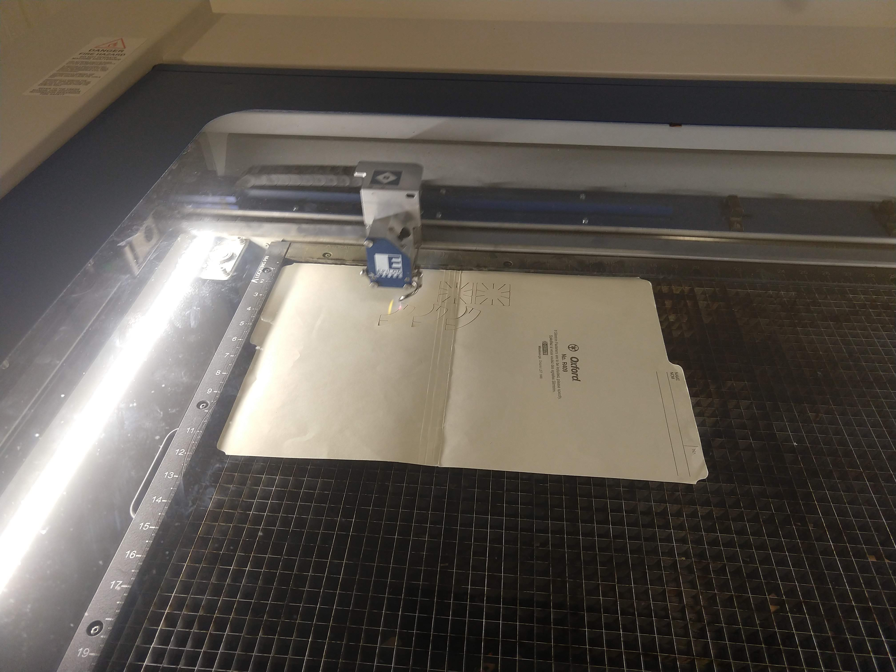
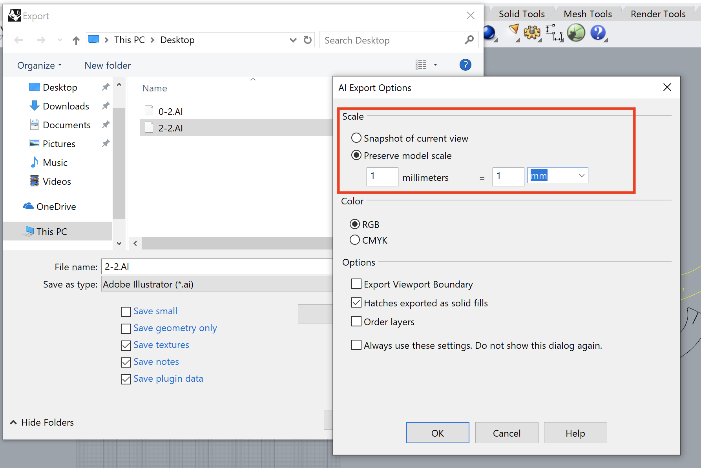
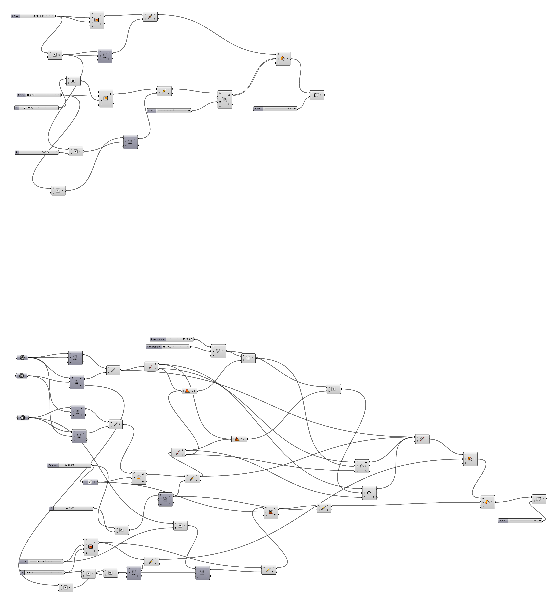

This was a fun project and really demonstrated the power of quickly creating similar components quickly.
To get familiar with Rhino3D and Grasshopper, I started with recreating the construction kit designs from A1 drawn using commands from Grasshopper.
Initially I started off with recreating the shape using a series of polyline segments but that quickly became unwieldly. One of the biggest challenge this week was figuring out how to express the items created last week with basic shapes and geometries. For example, it took several attempts to realize that notches within the construction kit can be created as rectangles that are superimposed on top of an existing shape and then apply a region difference to create the notches.
The square construction piece was parameterized so that the size of the piece as well as the depth and width of the notches, and number of notches are all customizable via a number slider.
For the rectangular construction piece, in addition to the parameters for the depth and width of the notches, the piece was modified so that it could be printed with a curve. Some geometry math skills required here to draw the piece mathematically with an arc component. Also had to calculate how to rotate the notch in relation to the curve.
Some adjustments had to be made in when opening the exported files in Illustrator. I manipulated the positioning of the items to make it fit on the cardboard I had on hand. I also had to change the line thickness of the shapes so that they print out as vectors.
When printing, the laser cutter settings that worked well from Assignment 1 for the thick piece of cardboard was used initially (50% speed/75% power/50% freq). However, some trial and error attempts required for the thin piece of cardboard. Tried out two settings 50% speed/50% power/50% freq and 50% speed/25% power/50% freq and found that less power was required.

With the modified curved pieces from this week, I was able to create circular structures of varying diameters.
The scale of the exported items from Rhino3D to Illustrator was something to watch out for. The model scale needed to be defined. Otherwise, the exported shapes were the wrong size when opened in Illustrator.
>
It was too easy to link components in Grasshopper haphazardly. What ended up was a mess of components and lines. When debugging issues, it became very difficult to figure out where the values were coming from.

Learning how to group related and repeated actions into Clusters was critical to organizing things. Also helped with abstracting a series of simple steps from the main view so that I could concentrate on higher level components.
With the components grouped into logical Clusters and groups, it made it easier to understand what was going on with the overall diagram.
Grasshopper file defining programmatically generated pieces: assignment2.gh
Rhino3D model file: assignment2.3dm
Generated Adobe Illustrator file with notches at 0.2 mm for thin cardboard: assignment2-0.2mm.AI
Generated Adobe Illustrator file with notches at 2.2 mm for thick cardboard: assignment2-2.2mm.AI
Laser cutter settings for thin cardboard: 50% speed/25% power/50% freq
Laser cutter settings for thick cardboard: 50% speed/75% power/50% freq
Special thanks to Leo (@LeoSalemann) for showing me how to group things together in Groups and Clusters. This helped with organizing components in Grasshopper.